无线权威指南读书笔记
Table of Contents
- 1. 第一章 无线网络导论
- 2. 第二章 802.11 网络概论
- 3. 第三章 802.11 Mac基础
- 4. 第四章 成帧细节
- 5. 第五章 有线等效加密
- 6. 第六章 802.1X用户身份认证
- 7. 第七章 802.11i RSN， TKIP和CCMP
- 8. 第八章 管理操作
1 第一章 无线网络导论
1.1 无线网络的优势在哪里？
1.1.1 移动性
1.1.2 部署灵活
1.2 无线频谱
1.2.1 无线设备被限制工作于某些频段，每个频段都有一定的带宽，即该频段上频率空间的大小。
1.2.2 带宽越大，可以传输更多的信息。
1.2.3 这些频段一般受政府部门管制，对于802.11设备，只能工作于ISM无受限的频段，各个国家限制的情况也不一样。
1.3 无线网络的限制在哪里？
1.3.1 无线网络的速度受限于可使用的带宽。
1.3.2 由于无线网络中传输的数据都必须进行合法性检查，以确保数据没有丢失，无线网络硬件数据传输速度一般要比有线网络硬件传输速度慢。
1.3.3 只要数据传输遵循规范，有线网络数据传输就不会有大问题。但是，在无线网络中，由于多径干涉和隐藏结点问题，数据传输过程可能被中断。
1.3.4 由于无线网络的开放性，安全问题是一个极大挑战。
2 第二章 802.11 网络概论
2.1 802.11主要关注OSI最底层：Phy层和Mac层。
Mac层是一组用以决定如何访问媒介和传送数据的规则。Phy层则负责具 体的传送与接收。
2.2 网络类型
- 独立型网络
工作站之间可以直接通信
- 基础结构型网络
- 所有的通信必须经过接入点
- 接入点在基础结构型网络的作用之一是协助工作站省电。 接入点可以记住哪些工作站处于省电状态，并为之缓存帧。
2.3 网络服务
- 分布式
传递帧时，可使用此服务来决定目的地位于基础结构网络上的地址。
AP的一个主要角色就是要将有线网络的服务扩展到无线网络中。这是 通过为无线端提供分布式和整合服务来实现的。为了保持关联数据， STA位置信息，DS提供了关联，重新关联，取消关联等服务。
- 整合
用于将帧传送至无线网络以外的如IEEE 802.3 LAN
- 关联
用来建立AP（作为网关使用）与特定移动式工作站间的关联。
- 重新关联
用来变更AP与特定移动式工作站的关联。
- 取消关联
用来从网络移除无线工作站。
- 身份验证
建立关联之前用来进行身份验证（利用MAC地址） prior to association, a station will perform a basic identity exchange with an access point consisting of its MAC address.
- 解除身份验证
用来终结一段身份验证关系，其副作用是终止当前关联。
- 机密性与访问控制
提供数据的保密性与完整性，依赖共享式加密密钥，这些需要其他服务来提供身份验证与密钥管理。
- 身份验证与密钥管理
机密性服务依赖身份验证与密钥管理的配套使用来确定用户的身份并 建立加密密钥。身份验证可以通过外部协议如802.1X或共享密钥的 方式来完成。
- 加密算法
常见的有WEP40， WEP104，TKIP（临时密钥完整性协议）和CCMP（CBC-MAC计数模式协议）
- 来源真实性
TKIP与CCMP用于验证发送端MAC地址，保护单播数据。
- 重放检测(Replay Detection)
TKIP与CCMP会使用序号计数器来验证所接收的帧以防范攻击，“太旧”的帧会被 丢弃。
- 其他外部协议
机密性服务依赖其他外部协议，密钥管理由802.1X提供，而802.1X则会搭配EAP来传递身份验证数据。
- MSDU传送(Mac Service Data Unit Delivery)
用来传送数据到接收端
- 传输功率控制(TPC)
降低工作站传输功率以减少干扰。
- 动态频率选择（DFS）
许多机场雷达工作在UNII-2和UNII-1的频率范围（信道 52到140）, 如果AP工作在这些频率范围，一量检测到雷达波，就必须转移到其他 信道去工作，避免在5GHz频带干扰雷达操作。
参考链接:
2.4 移动性支持
802.11在链路层提供BSA（Basic Service Area）之间的移动性支持。 对于802.11网络而言，接入点之间存在如下三种转换:
- 不转换
工作站一直没有离开当前接入点的服务范围。
- BSS转换
工作站持续监控来自所有接入点的信号强度和信号质量。 这些接入 点属于同一个ESS（扩展服务集）。当一个移动工作站从一个BSS移动到 另一个BSS中时，就会发生BSS转换。该移动工作站会使用重新关联与另 一个接入点关联，同时该接入点必须通知上一个接入点当前移动工作站 已经与自己关联。
- ESS转换
从一个ESS移动到另一个ESS。802.11不支持这种类型的转换。只支持移 动到一个新的ESS中时，可以与其中的一个AP关联。
2.5 移动网络的设计
在设计上，一般网络采用一组接入点访问同一组资源。所有接入点会被赋予相同的SSID，使用无线网络时，工作 站就以此SSID进行连接。 工作站四处移动时，除了持续监视网络连接状态，也会在不同接入点间进行切换。802.11可以确保 工作站移动到不同接入点时维持关联，只要这些关联隶属于同一个SSID。
3 第三章 802.11 Mac基础
3.1 802.11使用冲突避免机制(CSMA/CA)
3.2 面临的挑战
3.2.1 射频链接的品质
- 易受干扰，对于所有传送的帧，必须使用Positive Acknowledge机制。
- 所有数据帧传送，都被视为原子操作, 若没有完成整个步骤，则需要重传。
- 信号质量随着距离的拉长而有所减损。
- 工作站应该具备根据环境变更传输速率的机制。
3.2.2 隐藏结点
- 在无线网络中，隐藏结点问题导致的冲突很难检测。
- 为了防止冲突发生，在发送数据帧前需要发送RTS
- 接收端响应一个CTS响应。
- RTS和CTS帧都 会令周围的工作站保持沉默。
- 用户可以通过调整RTS阀值，来控制RTS/CTS交换过程, 大于此阀值才会进行RTS和CTS的传送 过程，否则就直接传送数据帧。
3.3 MAC访问模式与时机
- DCF分布式协调功能
在传送数据之前，会检查无线链路是否处于清空状态。为了避免冲 突，当某个传送者占用数据信道时，工作站会随机为每一个帧选择 一段退避时间。在某些情况下，可以利用RTS/CTS进一步减少冲突的 发生。
- PCF点协调功能
提供无竞争服务，一般位于接入点，应用于基础结构型 网络 。 PCF允许工作站经过一段较短的时间间隔后即可传送帧。
- HCF混合协调功能
允许工作站维护多组服务队列 ，针对需要更高服务质量的应用提供更多的无线媒介访问机会。
3.4 载波监听功能与网络分配矢量
- 主要用于判断当前媒介是否可用。
- 物理载波监听 硬件比较复杂，需要包含昂贵的电子器件，才能支持信号收发器同 时进行数据传输与接收。另外，硬件载波监听无法提供发现隐藏节点 所需要的所有信息。
- 虚拟载波监听
- 802.11帧会包含一个Duration字段，预订媒介使用的时间
- 只要Duration不为0，就代表媒介处于忙碌状态
- STA会倒数Duration的值一直到0，一旦变为0，则可以马上进行数 据传输。
3.5 帧间间隔
- 在协调媒介访问中扮演重要角色
- 不同的帧间间隔会为不同类型的传输产生不同的优先次序
- 高优先级的传输类型，帧间间隔比较短
- 不同传输速率的帧间间隔是固定的，与传输率无关。
- 不同物理层可以指定不同的帧间间隔。
- 类型
- 短帧间间隔(SIFS)
主要用于高优先级传输, 一般用于不同单位的原子操作之间。
- PCF帧间间隔(PIFS)
用于无竞争传输场合, 优先级高于任何竞争式传输。
- DCF帧间间隔 (DIFS)
是竞争式服务中媒介闲置时间最长的，如果媒介闲置时间长于DIFS，则工作站可以立即对媒介 进行访问
- 扩展帧间间隔(EIFS)
非固定的时间间隔 , 一般用于传输帧 出错的情况 。
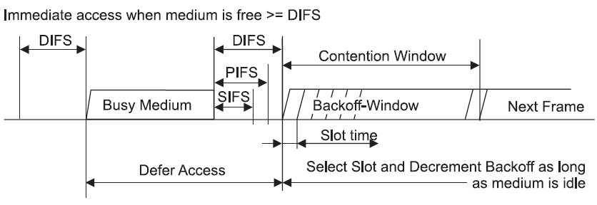
Figure 1: Some IFS relationships
3.6 利用DCF进行基于竞争的访问
- 大部分传输操作会使用分布式协调功能（DCF），它允许多个工作站之 间相互独立，无需通过中心控制结点，可以运用于IBSS或基础结构型 网络中。
- 在试图传送任何数据前，工作站必须查看当前媒介是否处于空闲状态。 若它处于忙碌状态，则必须延迟访问并利用指数规避算法选择一个退 避时间，以避免发生冲突。
- 两项基本规则：
- 如果媒介闲置时间长于DIFS，便可立即进行传输。
- 如果之前的帧接收无误，则媒介必须至少空出一段DIFS。
- 如果之前传输出现错误，则媒介必须至少空出一段EIFS。
- 如果媒介处于忙碌状态，则工作站必须等候至信道再度闲置，即访 问延迟，一般会等候媒介闲置DIFS，同时准备指数规避过程。
- 额外规则
- 错误恢复是发送端的责任，发送端的每个帧都应该得到确认，如果
没有收到，则需要重新发送，直到成功为止。
只有收到肯定确认，才表示发送成功。原子交换操作必须全部完 成才算成功。 所有单播数据必须得到确认，广播数据则不予确认。 只要发送失败，重试计数器就会累加，然后重新发送，重传时，会 等待一段较长时间。
- 多帧序列可以在传送过程中的每个步骤更新NAV值，当所收到的媒 介预订时间比当前的NAV还长时，工作站会立即更新NAV。
- 确认帧，RTS/CTS交换过程中的CTS以及片段序列中的帧片段的优先 级较高。
- 如果较高层的包的大小超过设定的阀值，则必须使用扩展帧序列。 包的大小超过RTS阀值，必须使用RTS/CTS交换过程。长度超过分段 阀值，必须加以分段。
- 错误恢复是发送端的责任，发送端的每个帧都应该得到确认，如果
没有收到，则需要重新发送，直到成功为止。
- DCF与错误恢复
- 工作站本身有两个重试计数器： 短帧重试计数器， 长帧重试计数 器。小于RTS阀值的帧视为短帧，大于RTS阀值的帧视为长帧。
- 帧重试计数器由零开始，只要帧传送失败，就会累加。
- 如下情况下，短帧重试计数器会清零：
- 之前传送的RTS得到CTS响应。
- 之前传送的未分段帧得到MAC层的响应。
- 收到广播或组播(multicast)的帧。
- 如下情况下，长帧重试计算器会清零：
- 之前传送的帧大于RTS阀值，且得到了MAC层的响应。
- 收到广播或组播的帧。
- 另外，MAC会赋予每个帧片段一个最长的“生存时间”。
第一个帧片段发送出去后，会启动生存时间计数器，一 旦超过生存时间，该帧便会被丢弃，不会重试其他的帧片段。
- DCF退避算法
当帧传送完毕后，且经过一段DIFS后，会试图重新传送之前拥 堵的数据。DIFS之后会紧跟着一段时间，称为竞争窗口或退避窗口。 竞争窗口会包含许多时隙。以DSSS（直接序列扩频）物理层为例，当 重传次数增加时，竞争窗口也随之增长。竞争窗口通常是2的指数倍减 1，当重试计数器累加时，竞争窗口会移到下一个2的指数倍数。竞争 窗口的大小受到物理层的限制。当帧传送成功后，竞争窗口随即恢复成最小值。
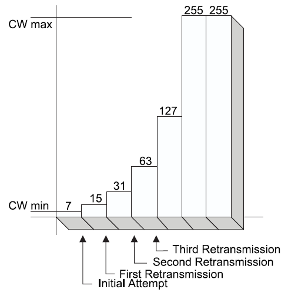
Figure 2: An example of exponential increase of CW
案例分析the process of traffic transmission after the end of DIFS.Question Description:
Suppose we have 3 wireless clients. A,B and C. C is sending packets on the wireless channel.As soon as it receives the last ACK from the AP with a NAV of 0, the DIFS starts ticking. NOW, after the end of DIFS the CW sarts off. Suppose client A randomly selects a slot time of 2 and B selects a slot time of 4. I would like to understand the process of traffic transmission after this.
Answer:
A and B would count down in parallel (and each would ignore that the other one picked a CW and is counting down). At each number down (3 for B and 1 for A), both would listen to the channel to check if there is any signal detected (the signal has to be a certain strength, defined as 20 dBM above the minimum sensitivity defined by the 802.11 standard for that band, most of the time we say that the signal should be about -65 dBm to be read, but it is a bit more complicated than that). If there is a signal, each detecting station would try to see if it can detect an 802.11 header that would tell them the duration of the transmission (Duration field in the header). If that field can be read, then each detecting station adds this duration to its CW and restarts counting down from the new number. If the duration field is not read but the signal is strong enough, each detecting station stops counting down and listens to the air at each slot time (as if the station was counting down, but the CW does not decrease) until the signal is gone. The stations then resume their countdown. A funny aspect is that if one station hears the signal above the threshold (say -65 dBm) it will stop counting down for the duration of the signal, but if the other station is farther away from the signal source, it may hear it way below the threshold and simply ignore it (continuing to count down). If both stations heard the signal the same way, A will get down to 0, listen to the medium, find it silent, and will start sending its frame. At this point B (still left at 2 in the countdown) would hear A signal, would try to read the duration field, and would restart counting down from 2+duration field… .
如果检测到无线信号，但是无法读取Duration的值，则会暂停 倒计时。
3.7 分片和重组
当上层的数据包或者一些大的管理帧数据包的分片阀值时，此时需要对 数据包进行分片。所有的分片具有相同的帧序列号，但是分片号会递增 以便于接收方进行重组。帧控制信息中也会指示是否还有帧分片未传输 完。
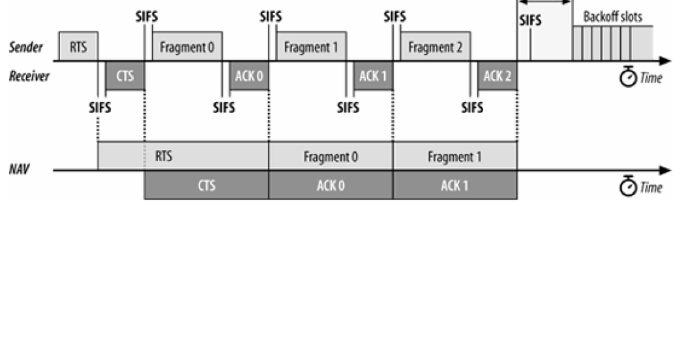
Figure 3: 分片传输
3.8 帧格式
3.8.1 Frame Control字段
- 长两个字节
- Protocol字段 版本协议号，目前为0.
- Type与SubType字段 用于指定使用的帧类型
- To DS和From DS位 指示帧的目的地是否为分布式系统。
- More fragments位 是否有后续分段
- Retry位 是否为重传的帧
- Power management位 指示发送端在完成当前原子帧交换之后是否进入省电模式。
- More data位 为1时，表明至少有一帧待传给休眠中的工作站。
- Protected Frame位 是否受到链路层安全协议的保护。
- Order位 是否进行严格依次传送。
3.8.2 Duration/ID 字段
- 有三种形式
- Duration（NAV） 此值代表当前所进行的传送预计需要使用媒介多少微秒， 工 作站必须监视所收到的任何帧头信息， 并据此更新NAV。任何 超出预计使用媒介时间的数值均会更新NAV，同时阻止其他工作 站访问媒介。
- CFP Frames 无竞争周期所传送的帧。
- PS-Poll帧 从休眠状态醒来的工作站必须送出一个PS-Poll帧，以便从接 入点取得之前缓存的任何帧。
3.8.3 Address字段
- 目的地址 代表最后的接收端
- 来源地址
- 接收端地址
- 发送端地址
- 基本服务集标识符（BSSID）
3.8.4 顺序控制字段
- 重组帧片段以及丢弃重复帧。
3.8.5 帧主体
- 有效载荷
3.8.6 帧校验序列（FCS）
3.9 帧类型
3.9.1 管理帧
- Association Request
- Association Response
- Reassociation Request
- Reassociation Response
- Probe Request
- Probe Response
- Beacon
- ATIM（通知传输指示消息）
- Disassociation
- Authentication
- Deauthentication
3.9.2 控制帧
- PS-Poll(省电轮询)
- RTS
- CTS
- ACK
- CF-End（无竞争周期结束）
- CF-End + CF - ACK
3.9.3 数据帧
- Data
- Data + CF-ACK
- Data + CF-Poll
- Data + CF-ACK + CF-Poll
- Null data
- CF-ACK
- CF-Poll
- Data + CF-ACK + CF-Poll
- QoS Data
- QoS Data + CF-ACK
3.10 省电程序
在RF系统中，最耗电的组件就是放大器。802.11工作站可以关闭无线 电波收发器以进入休眠状态，以维持最长的电池使用时间，在休眠期 间，接入点会为每个处于休眠状态的工作站缓存单播帧。从省电状态 苏醒的工作站可以使用PS-Poll帧取得这些缓存帧。
收到PS-Poll的AP可以立即响应请求的数据，也可以稍后环境允许的 情况下响应请求的数据。PS-Poll的响应行为是由AP厂商决定的， 802.11Spec 只要求支持其中一种行为即可。
3.11 多速率支持
每个工作站均持有一份操作速率列表，其中记录工作站与所连接BSS均 支持的所有速率。高于操作速率集的传送是不允许的。
每个BSS维护一组基本速率集， 任何传送至此的帧必须以基本速率集 中的某个速率进行传送，以便其他工作站均可以正确解读。 用于开始交换的控制帧，必须以基本速率中的一种速率进行传送。 单播帧可以使用目的端支持的任一速率传送。 ACK或CTS之类的确认帧必须以基本速率集包含 的速率传送，但不能快 于这次传送所使用的初始速率。响应帧必须使用与初始帧相同的调制方式。
速率越高，对误差要求越高，所以对环境的要求也越高。一般，环境越 差，速率就会相应降低，以满足误差的要求。
4 第四章 成帧细节
4.1 Frame fields
4.1.1 Frame Control field
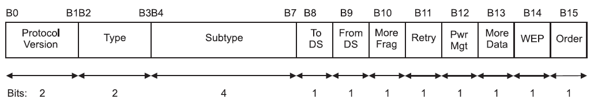
Figure 4: Frame Control field
- Protocol Version
协议版本号，一般为0， 固定两个字节长。
- Type
该域是固定2个字节长， 总共有三种类型：控制帧、管理帧、数据帧。
- Subtype
该域是固定4个字节长。 Type和SubType域的值一起标识了一个帧的 功能。
Table 1: Valid type and subtype combinations Type value b3 b2 Type Description Subtype value b7 b6 b5 b4 Subtype description 00 Management 0000 Association request 00 Management 0001 Association response 00 Management 0010 Reassociation request 00 Management 0011 Reassociation response 00 Management 0100 Probe request 00 Management 0101 Probe response 00 Management 0110–0111 Reserved 00 Management 1000 Beacon 00 Management 1001 Announcement traffic indication message (ATIM) 00 Management 1010 Disassociation 00 Management 1011 Authentication 00 Management 1100 Deauthentication 00 Management 1101–1111 Reserved 01 Control 0000–1001 Reserved 01 Control 1010 Power Save (PS)-Poll 01 Control 1011 Request To Send (RTS) 01 Control 1100 Clear To Send (CTS) 01 Control 1101 Acknowledgment (ACK) 01 Control 1110 Contention-Free (CF)-End 01 Control 1111 CF-End + CF-Ack 10 Data 0000 Data 10 Data 0001 Data + CF-Ack 10 Data 0010 Data + CF-Poll 10 Data 0011 Data + CF-Ack + CF-Poll 10 Data 0100 Null function (no data) 10 Data 0101 CF-Ack (no data) 10 Data 0110 CF-Poll (no data) 10 Data 0111 CF-Ack + CF-Poll (no data) 10 Data 1000–1111 Reserved 11 Reserved 0000–1111 Reserved - To DS Field
固定一个字节长，对于发送目标为DS的帧，置为1，一般包含所有从 STA发往与之相关联的AP的帧，对于其他帧，该位置为0。
- From DS Field
固定一个字节长，对于从DS出来的帧，该位为1，其他情况下的帧， 该位置为0。
Table 2: To/From DS combinations in data type frames To/From DS values Meaning To DS = 0 From DS = 0 A data frame direct from one STA to another STA within the same IBSS, as well as all management and control type frames. To DS = 1 From DS = 0 Data frame destined for the DS. To DS = 0 From DS = 1 Data frame exiting the DS. To DS = 1 From DS = 1 Wireless distribution system (WDS) frame being distributed from one AP to another AP. - Retry field
一个比特长， 只要是数据帧或管理帧重传，该位就会被置为1。其 他情况下，该位都为0。
- Power Management field
一个比特长。当值为1时，表明该STA将进入省电模式，为0时，表明 STA将会处于活跃状态。对于AP传出来的帧，该位的值总是0。
- More Data field
一个比特长，主要用于告知处于省电模式 下的STA是否有更多的发 住该STA的缓存的MSDU或MMPDU。
- WEP field
一个比特长， 置为1时，表明帧主体包含通过WEP算法处理的信息。 只有当帧类型为数据帧或管理帧，且子类型为认证的帧上，该位才 会设置为1。
- Order field
一个比特长，包含一个MSDU的数据类型帧，使 用StrictlyOrdered服务传送的分段的数据帧。
4.1.2 Duration/ID field
16比特长。
| Bit 15 | Bit 14 | Bits 13-0 | Usage |
|---|---|---|---|
| 0 | 0-32767 | Duration | |
| 1 | 0 | 0 | Fixed value within frames transmitted during the CFP |
| 1 | 0 | 1–16 383 | Reserved |
| 1 | 1 | 0 | Reserved |
| 1 | 1 | 1–2 007 | AID in PS-Poll frames |
| 1 | 1 | 2 008–16 383 | Reserved |
4.1.3 Address fields
- BSSID
唯一标识了每个BSS。全1的BSSID代表了一个广播BSSID，通常用于 Probe Request帧。
- Destination Address (DA) field
final recipient(s) of the MSDU
- Source Address (SA) field
Identifies the MAC entity from which the transfer of the MSDU was initiated.
- Receiver Address (RA) field
identifies the intended immediate recipient STA(s)
- Transmitter Address (TA) field
identifies the STA that has transmitted, onto the WM, the MPDU.
4.1.4 Sequence Control field
总共16比特长，包含两个子域：Sequence Number ， Fragment Number。
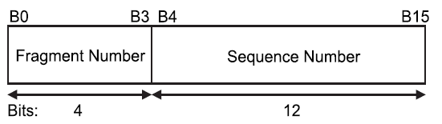
Figure 5: Sequence Control field
- Sequence Number field
12比特长，0~4095.
- Fragment Number field
4比特长， 从0开始。
4.1.5 Frame Body field
长度可变，长度可为0， 最大长度为： MSDU + ICV + IV。
4.1.6 FCS field
长度为32比特，包含一个32-bit的CRC。
4.2 Format of individual frame types
4.2.1 Control frames
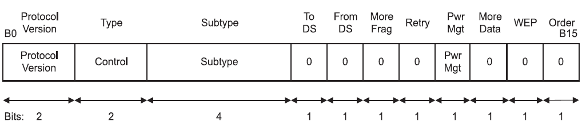
Figure 6: Frame Control field subfield values within control frames
- Request To Send (RTS) frame format
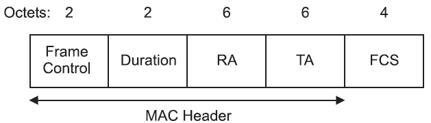
Figure 7: RTS frame
Duration:即将传输的数据或管理帧，加上一个CTS帧，加一个 ACK帧以及三个SIFS所需要时间总和，单位为毫秒，如果和是小数， 则进位到比它大的最小整数。 - Clear To Send (CTS) frame format
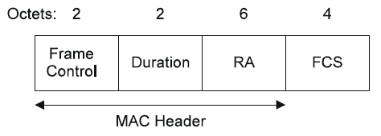
Figure 8: CTS frame
Duration:上一个RTS帧的Duration值 - （传输CTS帧所需要的 时间 + 它的SIFS值）， 出现小数，则进位到比它大的最小整数 值。 - Acknowledgment (ACK) frame format
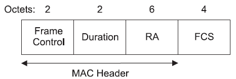
Figure 9: ACK frame
如果上次传送的数据帧或管理帧的
More Fragment位设置为0， 则Duration的值设为0。如果为1， 则Duration的值为上 一个数据帧或管理帧的Duration值减去传输ACK帧和其对应的 SIFS的值。 - Power-Save Poll (PS-Poll) frame format
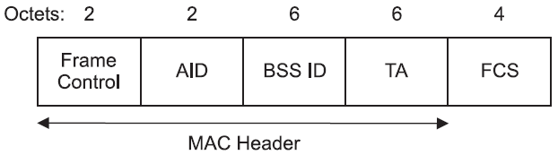
Figure 10: PS-Poll frame
AID的最高有效位的前两位问题设为1.
- CF-End frame format
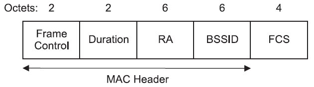
Figure 11: CF-End frame
BSSID是包含在AP里面的STA的地址，RA是广播组地址，Duration的值设为0。 - CF-End + CF-Ack frame format
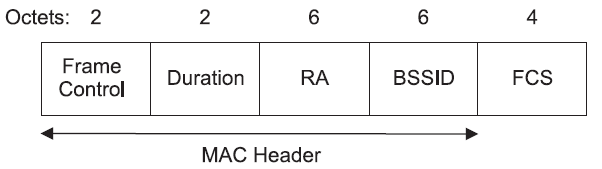
Figure 12: CF-End + CF-Ack frame format
BSSID是包含在AP里面的STA的地址，RA是广播组地址，Duration的值设为0。
4.2.2 Data frames
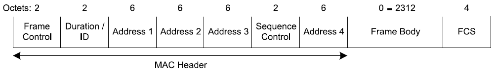
Figure 13: Data frame
地址域的值跟 To DS 和 From DS 的值的不同有不同的解释。
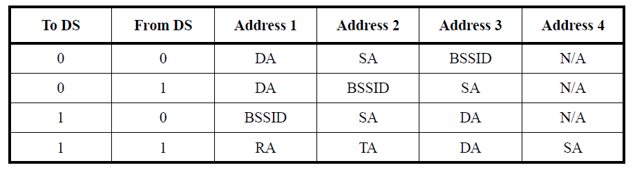
Figure 14: Address field contents
4.2.3 Management frames
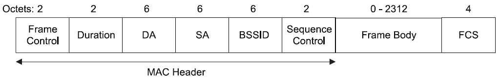
Figure 15: Management frame format
- Beacon frame format
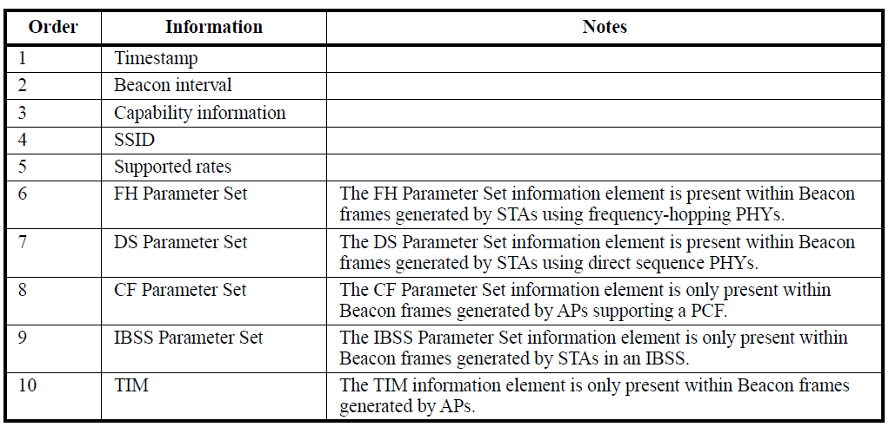
Figure 16: Beacon frame body
- IBSS Announcement Traffic Indication Message (ATIM) frame
format
帧主体为空。
- Disassociation frame format
Figure 17: Disassociation frame body
- Association Request frame format
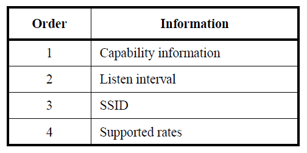
Figure 18: Association Request frame body
- Association Response frame format
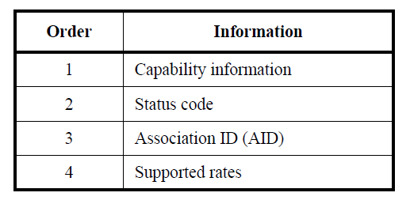
Figure 19: Association Response frame body
- Reassociation Request frame format
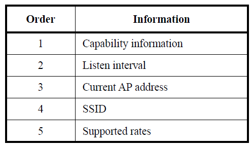
Figure 20: Reassociation Request frame format
- Reassociation Response frame format
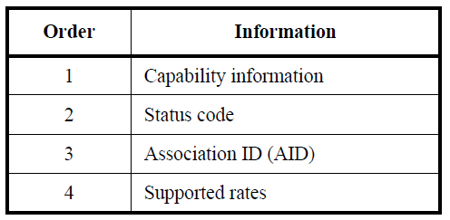
Figure 21: Reassociation Response frame body
- Probe Request frame format
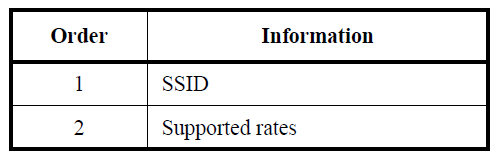
Figure 22: Probe Request frame body
- Probe Response frame format
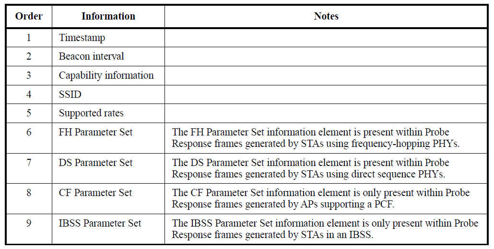
Figure 23: Probe Response frame body
- Authentication frame format
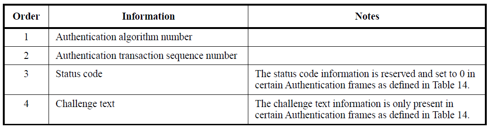
Figure 24: Authentication frame body
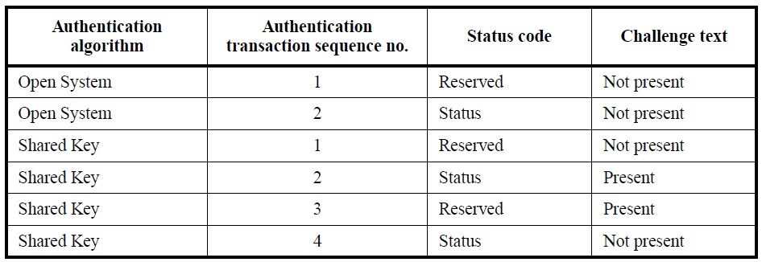
Figure 25: Presence of challenge text information
- Deauthentication
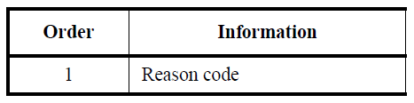
Figure 26: Deauthentication frame body
4.3 Management frame body components
对于管理帧，固定长度的必须存在的帧主体的组成部分称为固定域。可变长 度的非必须存在的或可选的帧主体组成部分称之为信息元素（information elements）
4.3.1 Fixed fields
- Authentication Algorithm Number field
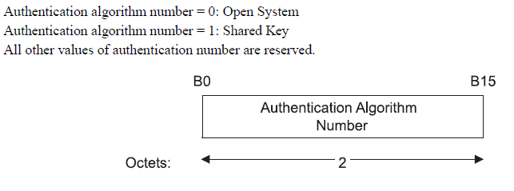
- Authentication Transaction Sequence Number field
the current state of progress through a multistep transaction.
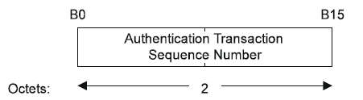
Figure 28: Authentication Transaction Sequence Number fixed field
- Beacon Interval field
the number of time units (TUs) between target beacon transmission times (TBTTs).
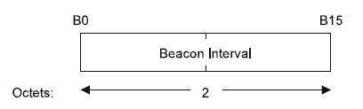
Figure 29: Beacon Interval fixed field
- Capability Information field
通信双方请求或建议的一些能力支持信息。
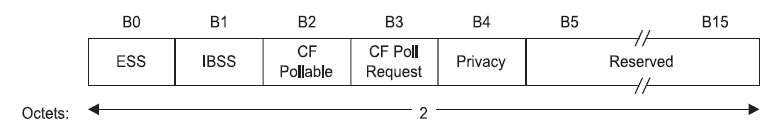
Figure 30: Capability Information fixed field
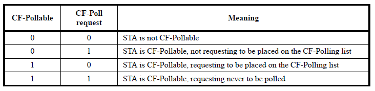
Figure 31: STA usage of CF-Pollable and CF-Poll Request
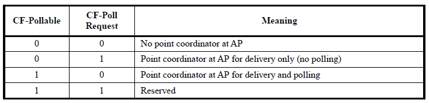
Figure 32: AP usage of CF-Pollable and CF-Poll Request
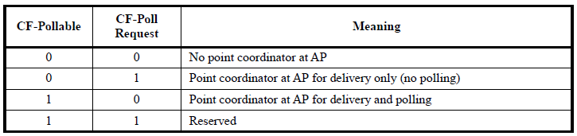
Figure 33: AP usage of CF-Pollable and CF-Poll Request
- Current AP Address field
STA相关联的AP的MAC地址。
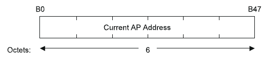
Figure 34: Current AP Address fixed field
- Listen Interval field
indicate to the AP how often an STA wakes to listen to Beacon management frames.
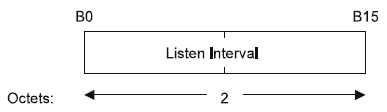
Figure 35: Listen Interval fixed field
- Reason Code field
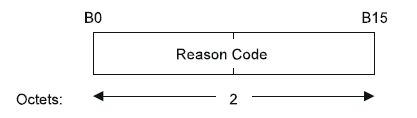
Figure 36: Reason Code fixed field
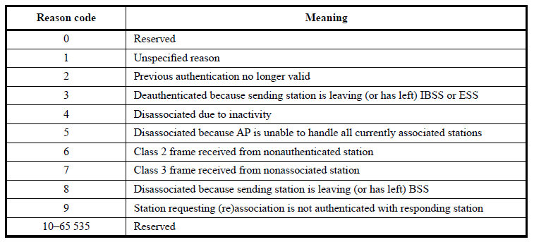
Figure 37: Reason codes
- Association ID (AID) field
范围：1~2007
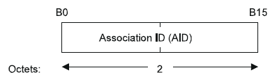
Figure 38: AID fixed field
- Status Code field
指示一个请求操作的状态。
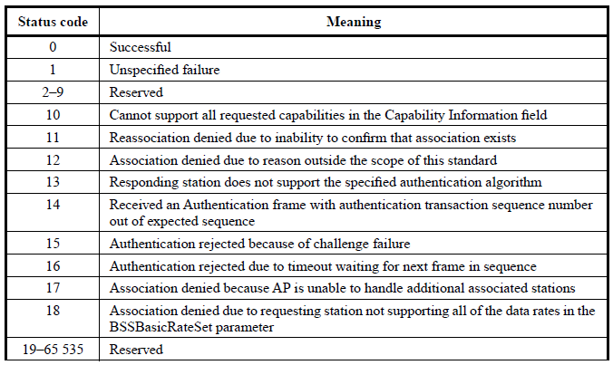
Figure 39: Status codes
- Timestamp field
代表一个帧的Source的
TSFTIMER值。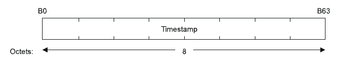
Figure 40: Timestamp fixed field
4.3.2 Information elements
IE的信息大体结构类型，每个IE信息都有一个唯一的ID号，结构如下：
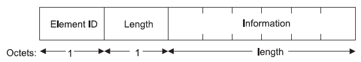
Figure 41: Element format
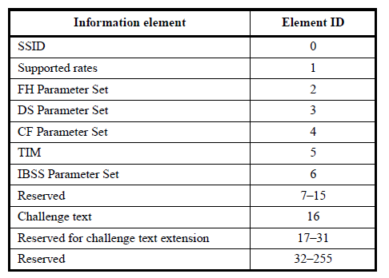
Figure 42: Element IDs
- Service Set Identity (SSID) element
The SSID element indicates the identity of an ESS or IBSS. 长度为0代表一个广播的SSID。
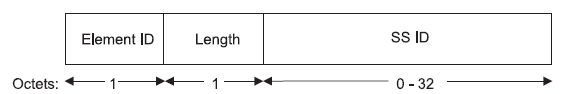
Figure 43: SSID element format
- Supported Rates element
IE被编码为1到8个字节，每个字节描述一个支持的传输速率，以500 kb/s为最小单位。
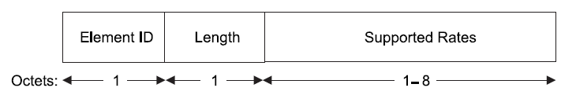
Figure 44: Supported rates element format
- FH Parameter Set element
跳频物理层参数
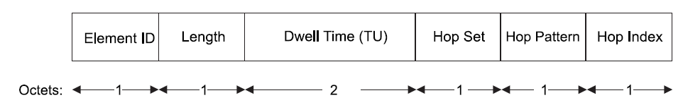
Figure 45: FH Parameter Set element format
- DS Parameter Set element
直接序列扩频物理层参数。
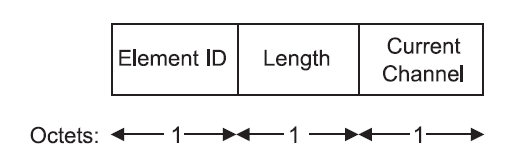
Figure 46: DS Parameter Set element format
- CF Parameter Set element format
The CF Parameter Set element contains the set of parameters necessary to support the PCF.
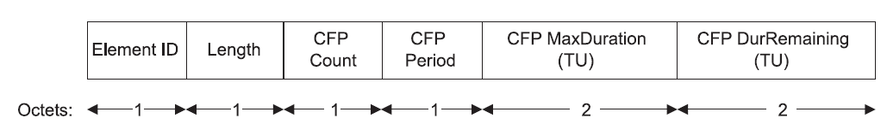
Figure 47: CF Parameter Set element format
- TIM
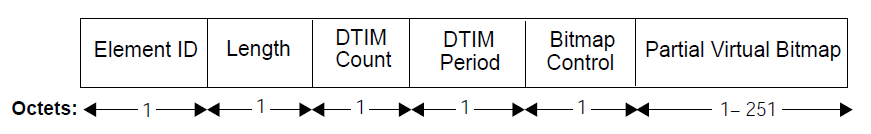
Figure 48: TIM element format
DTIM Count在下一次DTIM之前，需要出现多少个Beacon帧。 当该值为0时，表明当前TIM就是一个DTIM。DTIM Period连续两个DTIM之间的Beacon interval的个数。 如果所有的TIM都是DTIM，则DTIM Period的值为1。 0为保留值。 - IBSS Parameter Set element
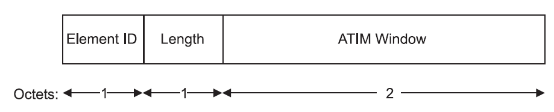
Figure 49: IBSS Parameter Set element format
- Challenge Text element
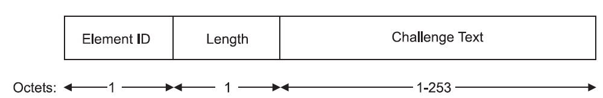
Figure 50: Challenge Text element format
5 第五章 有线等效加密
5.1 通信安全有三个主要目标
5.1.1 机密性(Confidentiality)
- 数据要防止被第三方截获
5.1.2 完整性(Integrity)
- 接收到的数据必须未被更改。
5.1.3 认证(Authentication)
- 通信前，双方需要通过身份验证。
- 授权(Authorization)和访问控制都是基于认证基础上实现。
5.2 为了满足上述目标，WEP采取了如下措施：
5.2.1 机密性
- 帧主体进行了加密
5.2.2 完整性
- 在数据传输过程中，有一个完整性检查序列，允许接收方验证收到 的数据是否被修改过。
5.2.3 认证
- 启用了更强的共享密码来认证访问AP的工作站。
5.3 然而，针对上述三个目标采取的措施，WEP都存在缺陷：
5.3.1 WEP只保护了数据在无线媒介上传输的时候，不能排除数据通过有线网络时被第三方截获的可能性。
5.3.2 WEP只保护来自外部的攻击者，并不能防止来自内部的攻击者。一旦内部攻击者发现了WEP密钥，无线媒介就变成了一个等同的大的共享有线网络。
5.4 认证方法
5.4.1 802.11最初定义了两种认证方法
- Open System authentication
- Shared Key authentication
5.4.2 Authentication Message Format
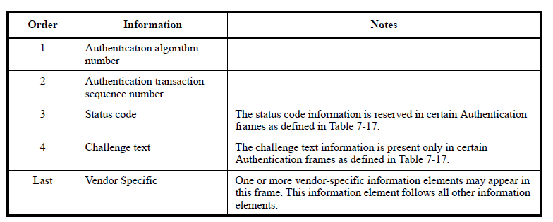
Figure 51: Authentication frame body
Figure 52: Presence of challenge text information element
5.5 深入了解WEP
5.5.1 加密的一般知识
- WEP使用RC4加密方法，它是一种对称流加密方法。
- keystream: a stream of bits.
- ciphertext: the keystream is combined with the message to produce ciphertext.
- to recover the original message, the receiver
processes the ciphertext with an identical
keystream.Figure 53: Generic stream cipher operation
- 大部分流加密器将一个相对较短的密钥扩展成一个伪随机密钥流
(keystream)，长度与消息明文一致。为了恢复数据，双方必须
共享密钥并使用相同的算法将密钥扩展成一个伪随机序列。流加
密器的安全性依赖于
keysteam的随机性，所以， key-to-keystream expansion的设计至关重要。Figure 54: Keyed stream cipher operation
5.5.2 WEP加密操作
WEP需要三个输入项：
- payload, from the upper layer protocol stack.
- a secret key. 可以是key比特位组成的一个字符串或Key Number（编号）， WEP允许同时保存4个key。
- a initializaiton vector.
在加密前，会对帧执行一个完整性检查的算法，产生一个哈希值称
为： integrity check value(ICV) . ICV用于确保帧在传输过程
中，没有被篡改过。帧和ICV值都会被加密。
Figure 55: WEP操作
WEP保护的是payload，不包含802.11 MAC头部，加密过程：
- 针对Frame Body计算ICV（Integrity Check Value）， 从SNAP 头部的第一个比特开始，一直到Frame Body的最后一位。由于此 时FCS还没有计算，所以不会包含到ICV的计算过程 。
- WEP Seed， 帧加密密钥组装。 密钥来自两部分： 密钥和初始 化向量（IV）（24-bit的随机数，一般由驱动指定）。
- 利用第二步产生的帧加密密钥，作为RC4的密钥，去加密802.11 MAC负载。这个加密过程一般是由专门的硬件电路完成的。
- 加密MAC负载后，就将这几部分组装成一个802.11 MAC帧传送。 在普通的802.11 MAC Header的基础上，会添加IV和WEP头部信息， 完成MAC头部的组装。最后，计算FCS。
5.5.3 WEP解密过程
首先，FCS确认收到的帧没有破坏。 为了解密，接收方需要： 密 钥 + IV， 产生一个keystream。 进行解密后，可以验证ICV，确认 数据帧有没有被篡改过。 如果没有问题，则可以将解密后的数据交 给上层去处理。
5.5.4 WEP密钥长度
最初的802.11标准只定义了64-位的WEP作为可支持的加密方法，之 后，128-位的WEP也被定义为一种可支持的加密方法。
5.5.5 WEP Key的类型
- 静态WEP
所有的帧传输使用相同的Key，Spec中没有定义Key发布机制。
- 动态WEP
每个STA都有两个Key：key mapping key，保 护单播帧。 另一个是default key， 一个BSS中的所有STA共享， 保护广播和多播帧。 密钥可以通过更强的认证协议获取。
5.5.6 WEP Key编号和存储
WEP有个相关联的编号，一个802.11 STA至多可以定义4个Key。 最 初，Key编号是为了方便在整个网络中去更换Key。例如： 一个组织 之前使用的编号0的Key，现在想更换。这时，他可以定义编号为1的 Key，所有的STA在规定时间内，切换到使用编号1的Key。这个时间 过后，编号0的Key就被禁用了。
对于动态WEP，Key编号的意义就不一样了。 每个STA收到来自AP的 两个Key： 编号为0的mapping key， 编号为1的default key。 STA 使用Key 0来保护单播数据，而使用Key 1来保护多播和广播数据。
Figure 56: Manufacturer Names for WEP keys
- default key(s): all the mobile devices and the access points use a single set of keys. These keys are called default keys.
- key mapping key(s): each mobile device has a key that is
unique. In other words the key used between each mobile
device and the access point is specific to that
connection and not known to other mobile devices. These
keys are called key mapping keys.
Figure 57: Difference Between Default and Key Mapping Keys
5.5.7 WEP封装格式
当使用WEP时，帧主体扩展了8个字节。4个字节用于IV头部，4字节 用于ICVtrailer。
IV使用了前3个字节，最后一个字节主要用于填充和Key标识。当使 用一个default key时， Key ID子域标识了用于加密帧的默认Key。 如果使用了一个key mapping关系，则Key ID的子域是0。 填充字节 的6个比特位必须是0。完整性检测是一个数据帧的CRC，它追加到帧 主体上，由RC4保护。 FCS保护加密的数据。
Figure 58: WEP frame extension
6 第六章 802.1X用户身份认证
6.1 概述
6.1.1 802.1X是基于EAP框架
6.1.2 在连接层提供的一种机制
6.1.3 识别的是用户，而不是WEP那样识别的是机器
6.2 EAP
6.2.1 本身只是一个框架
6.2.2 没有指定具体的认证方法，方法的选择取决于后方的验证系统
6.2.3 EAP交互过程的一个示例
- 认证者发出一个Request/Identity包来识别用户。
- 终端用户系统提示用户输入相关信息，并将用户标识信息通过 Response/Identity包发送给认证者。
- 当用户身份识别后，认证者可以发起认证挑战，如MD5，认证者会通过 Request/MD-5 Challenge包要求对用户进行认证。
- 用户系统可能配置为使用其他方式的认证方法，比如GTD，这时，会向 认证者回应一个Response/NAK包，建议另一种认证方法GTD。
- 认证者发出一个Request/GTD挑战，要求输入卡片上的数字序号。
- 用户输入一个响应，通过Response/GTD包传送给认证者。
- 如果用户响应不正确，则认证失败。不过，认证方可以允许多次尝试， 比如，发起第二次Request/GTD认证包，要求用户再次进行响应。
- 同样，用户输入一个响应，并通过Response/GTD包传给认证者。
- 第二次如果正确的话，认证者会响应一个Success消息。
6.3 EAPOL
6.3.1 一种基于端口的网络认证协议
6.3.2 角色
- Supplicant
- Authenticator
- Authentication Server
- EAPOL交互过程的一个示例
- The supplicant starts the 802.1x exchange with an EAPOL-Start message.
- The "normal" EAP exchange begins. The authenticator (network switch) issues an EAP-Request/Identity frame.
- The supplicant replies with an EAP-Response/Identity frame, which is passed on to the RADIUS server as a Radius-Access-Request packet.
- The RADIUS server replies with a Radius-Access-Challenge packet, which is passed on to the supplicant as an EAP-Request of the appropriate authentication type containing any relevant challenge information.
- The supplicant gathers the reply from the user and sends an EAP-Response in return. The response is translated by the authenticator into a Radius-Access-Request with the response to the challenge as a data field.
- The RADIUS server grants access with a Radius-Access-Accept packet, so the authenticator issues an EAP-Success frame. The port is authorized, and the user can begin accessing the network. DHCP configuration may take place at this point.
- When the supplicant is done accessing the network, it sends an EAPOL-Logoff message to put the port back into an authorized station.
- EAPOL在802.11网络上的交互过程
与上述交互过程类似，只是认证过程必须在Station与AP关联成功后，才开始。
Figure 59: The authentication process
7 第七章 802.11i RSN， TKIP和CCMP
7.1 TKIP
7.1.1 数据链路层加密协议
7.1.2 主要动机就是升级旧式的基于WEP硬件的安全。
7.1.3 采用RC4作为加密核心算法
7.1.4 属于一种过渡方案
7.2 CCMP
7.2.1 采用AES加密算法，对硬件要求高。
7.3 RSN
7.3.1 除了TKIP和CCMP，802.11i还定义了一组过程，它构建了RSN的标准。这些操作主要定义密钥的产生与分配方式。
7.3.2 802.11i密钥来源与分配
- 为了防范重放攻击，密钥的交换使用了随机数并且需要握手。
- pairwise密钥：4步握手。
- group密钥：2步握手。
8 第八章 管理操作
8.1 管理结构
SME是用户和设备驱动程序跟802.11网络接口交互和取得信息的方式。 PHY和MAC协议层都可以访问MIB（管理信息库）MIB包含了许多对象，有 些对象可以查询状态信息，有些则可以引发特定的动作。SME可以通过 MLME和PLME服务接口来更改MAC和PHY MIB。MLME和PLME之间也必须存在 一层接口，让MAC可以变更PHY。
8.1.1 MLME
- MAC层管理实体(MAC Layer Management Entity)
8.1.2 PLME
- 物理层管理实体(Physical-layer management entity)
8.1.3 SME
- 系统管理实体(System Management Entity)
8.2 扫描
8.2.1 概述
扫描过程主要会用到如下一些参数，这些参数可由用户提供或驱动默认设置：
- BSS类型 指定搜寻网络的类型：自组网还是基础网
- BSSID 针对要加入的特定网络进行扫描或扫描允许该工作站加入的所有网络
- SSID 指定某个扩展服务集（ESS）的位字符串。“网络名称”
- Scan类型 主动扫描还是被动扫描。
- 信道列表 被动扫描时，在某些信道被动侦听目前有哪些网络存在
- ProbeDelay 主动扫描探测某个信道时，为了避免工作站一直收不到响应而设定的定时器，以微秒为单位
- MinChannelTime和MaxChannelTime 扫描每个特定信道时所使用的最小 和最大时间量。
8.2.2 扫描类型
- 被动扫描
- 主动扫描
- 扫描报告
扫描结束后，会产生一份扫描报告。报告会列出扫描所发现的所有BSS及其相关参数。 进行扫描的工作站可以利用这份报告 ，选择加入其中的任何一个网络。
扫描结果中包含的参数主要有：
- BSSID
- SSID
- BSSType
- Beacon Interval 信标间隔 每个BSS均可以在自己指定的间隔内发送Beacon帧
- DTIM period DTIM周期 属于省电机制的一部分
- Timing参数 定时参数
- PHY参数， CF参数以及IBSS参数
- BSSBasicRateSet 加入某个网络时，该工作站必须支持的速率列表
8.3 加入网络
扫描汇总后，工作站可以选择加入其中的一个BSS。 此时还不能访问网络，需要验证
8.3.1 身份验证
802.11要求工作站在传送帧之前必须确认身份
- 开放系统身份认证
Open system authentication, 802.11要求必备的唯一方法, 只需要 两个身份验证管理帧。
- 旧式的共享密钥身份验证
Shared Key Authentication，必须使用WEP, 需要4个身份验证管理帧。 接入点将共享密钥发送给工作站，工作站通过密钥加密发送过来的明文， 再返回给接入点，接入点尝试解密，并检查数据完整性。如果一切OK， 则允许工作站接入, 该方法容易被攻击，通常不建议使用 （802.11i中 不允许以共享密钥的方式通过802.11的身份验证)
8.3.2 关联操作
一旦完成身份验证，就可以跟接入点关联了。形成关联之后，接入点必 须为该移动工作站在网络上注册，这样了送给该工作站上的帧才会转送 到其所属的接入点。关联只限于infrastructure型网络（基础结构型网 络），逻辑上等同于在有线网络上插入网线。
- 关联过程
关联过程涉及到三个步骤:
- 完成身份验证后，便可以送出Associatiion Request帧，未通过身份 验证的工作站会收到Deauthenication帧（取消关联）。
- 如何判断允许关联，与接入点实现有关，802.11标准并未明确规范。 考虑的因素主要是帧缓存的大小，关联成功会返回一个AID。
- 如果工作站处于省电状态，接入点会为工作站缓冲帧。
- 重新关联
当移动工作站从一个接入点进入到同属一个ESS的另一个接入点时， 工作站会持续监控当前接入点及同一个ESS中其他接入点所收到的信号质量 一旦检测到有更好信号强度的关联对象时，就会启动重新关联过程。
8.4 节省电力
8.4.1 基础结构型网络的电源管理
接入点必须保持清醒, 接入点与电源管理相关的两个任务是：
- 接入点知道所关联的工作站的电源管理状态，只要工作站处于活跃状态，就将与该工作站相关的帧发往无线网络中，否则就为之缓存。
- 定期声明有帧待传的工作站。
8.4.2 缓存单播帧以及使用TIM传递
- TIM:Traffic Indication Map 传输指示映射
接入点会为每个关联的工作站缓存帧，通过AID关联帧与工作站之间的逻
辑关系对于缓存的广播帧，AID为0。
接入点通过TIM来通知工作站有帧待传，TIM是通过Beacon帧传送的。
无线工作站必须处于活跃状态，才能监听Beacon以接收TIM。当工作站得 知有帧要接收时，通过PS-Poll控制帧告诉接入点准备接收缓存帧。多个 工作站发送PS-Poll时，需要采用Backoff算法以决定访问顺序。
每个PS-Poll帧只能获取一个缓存帧，当有多个缓存帧时，需要多次发送 PS-Poll帧。工作站必须一直保持清醒，直到事务完成或TIM中与自己AID 相应的位已经清除。当传送给该工作站的帧传递完毕或被接入点丢弃，则 工作站即可恢复休眠状态。
- Listen Interval 代表每隔几个Beacon周期，就醒来接收TIM。
接入点会为每个工作站缓存帧的时间足够长，以保证工作站能顺利获取这 些帧。接入点上的缓存帧的缓冲存储器是一个有限的资源。802.11强制要 求接入点使用某种老化机制，以便判断帧是否缓存过久，能否丢弃。一般 至少要保存Listen Interval指定的时间。
8.4.3 传递组播与广播帧：延迟传输指示映射（DTIM）
DTIM: Delivery Traffic Indication Map 指定组播地址的帧无法用轮询 算法来传递。经缓存的广播与组播帧是通过AID 0存储的。每个BSS都有一 个DTIM Period参数，每隔几个固定的Beacon Interval，就会发送一个特 殊的TIM，称为DTIM。
8.4.4 IBSS的电源管理
8.5 定时器同步
TSF（time synchronization function) ：定时同步
功能。每个工作站内部都有定时器，以及保存一份TSF副本，它是与基本
服务区域中所有其他工作站的TSF同步过的本地定时器。TSF 每微秒“作用”一
次。Beacon帧会定期对网络上的工作站发布TSF值。
- Infrastructure的定时同步
由接入点负责维护TSF时间，与之关联的工作站将无条件接受接入点的TSF。Beacon帧以及接入点回应的Probe Response帧都会包含TSF信息。
工作站从Beacon或Probe Response帧中取出Timestamp值，加入天线与收发器处理的时间，同步到本地计时器。
- IBSS的定时同步
IBSS不存在中央协调单元，因此Beacon是由工作站轮流传送的。 TSF的维护工作属于Beacon生成过程的一部分。
TBTT（target beacon transmission time）：目标信标传送时间
8.6 频谱管理
802.11h标准
- 传输功率控制
TPC：Transmit Power Control
每个工作站的传输功率有最大值和最小值要求，不是传输功率越大越好，满足需要即可。 超过所需要，就会造成浪费，而且可能会产生干扰，进而影响网络吞吐量。
- 基本操作方式
最在传输功率是由Beacon帧中的Country信息元素指定，为所在国家的最大管制功率。 Power Constraint信息则是指定网络可以使用的最大传输功率。
- 关联过程改变
具体频率管理的工作站在关联或重新关联到接入点时，必须在Power Capability信息元素中提供最小与最大的传输功率。
接入点根据自己的规则和标准接受或拒绝传输功率性能太差的工作站。
- 变更传输功率
接入点和工作站均可以动态调整个别帧的传输功率。
根据实际情况，调整传输帧的功率。例如，工作站可以送出一个Action 帧要求提供传输报告 。返回的Action帧会包含TPC Report的信息元素。 该报告中会包含本身的传输功率，接收端可以估算无线链接的路径损耗， 另外，报告中还会包含链接边界，告诉接收端已收到功率与最低可接受 功率之间的比值。例如，最低可接受功率为-70dBm，而实际接收到的 为-60dBm,则链路边界即为10dBm，如果链路边界太高，则可以降低传输 功率。
有些支持传输功率控制的高级接入点会去追踪将无线电波送达每个已关联工作站所需要的功率， 因为较近距离工作站所需要的功率小于较远的工作站。
- 基本操作方式
- 动态选频
DFS：Dynamic Frequency Selection 目的： 避免干扰5G雷达系统以及将功率展开到所有可用信道中。
- 基本操作方式
根据测量结果与管理需求，变更无线电波信道。
- 信道静默
无线信道测试是在静默周期或静默间隔内进行的。 在此期间，BSS中的所有工作站都暂时停止传输。
- 测量
无线信道测量可以在任何时候进行，无论是否处于静默期间。任何工作 站可以要求其他工作站进行测量。 送出测量请求后，工作站不得发 送任何其他帧。收到Measure Request帧后，工作站必须响应，即使是 拒绝测量。
同时，工作站也会主动发送Measure Report帧提报相关的统计数据。
- 雷达扫描
当信号强度超过某个特定的干扰值时，就必须进行雷达检测。一量检测 到雷达信号，网络就必须进行信道切换以避免干扰。
- Action帧
Action帧用来要求工作站采取必要的动作。频谱管理服务使用Action帧 提出：
- 测量请求（Meaurement Request）
- 测量报告（Meaurement Report）
- 传输功率控制请求（TPC Request）
- 传输功率控制报告（TPC Report）
- 信道切换声明（Channel Switch Announcementb）
- 基本操作方式